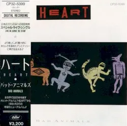
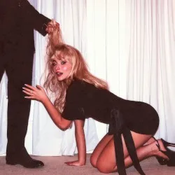
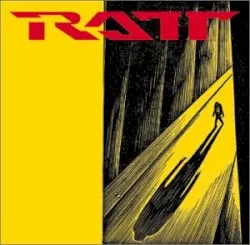

Bad Animals
Heart · ★★★★☆ 4,0
@besantanag95 · él · Quilpue
«Me gusta la musica ochentera»En la comunidad desde agosto de 2026
2seguidores3siguiendo13reseñas15favoritos
El artista, el álbum y la canción que eligió para presentarse.
Lo que recomienda escuchar primero, y su valoración más destacada.

Álbum
Did you know that there's a tunnel under Ocean Blvd
Lana Del Rey
Canción
Alone Again
Dokken
Artista
Tigertailz

Valoración destacada
Too Fast for Love
Mötley Crüe
★★★★☆
77/100

Heart · ★★★★☆ 4,0
Sabrina Carpenter · ★☆☆☆☆ 1,0
Sabrina Carpenter · ★☆☆☆☆ 1,0

Sabrina Carpenter · ★★★★☆ 4,0
| Fecha | Contexto | Disco |
|---|---|---|
| 24 sept 2026 | Repetición |  Man's Best FriendSabrina Carpenter |
| 14 sept 2026 | Primera escucha |  7800° Fahrenheit 7800° FahrenheitBon Jovi · Discazo |
| 14 sept 2026 | Primera escucha | Icon |
| 22 ago 2026 | Repetición | Tears Sabrina Carpenter |

Ratt
RattMan's Best Friend
Sabrina Carpenter
Dr. Feelgood
Mötley Crüe
The Rise and Fall…
Chappell RoanDid you know…
Lana Del ReySu huella de gusto, los artistas que sigue y su colección.
Escucha sobre todo música de los 2020s. Su familia más presente es Rock, sobre todo glam metal.

Tooth and Nail
Dokken · 1984 · vinilo


 Ratt
Ratt Belinda Carlisle
Belinda Carlisle Europe
Europe Queen
Queen Lana Del Rey
Lana Del Rey